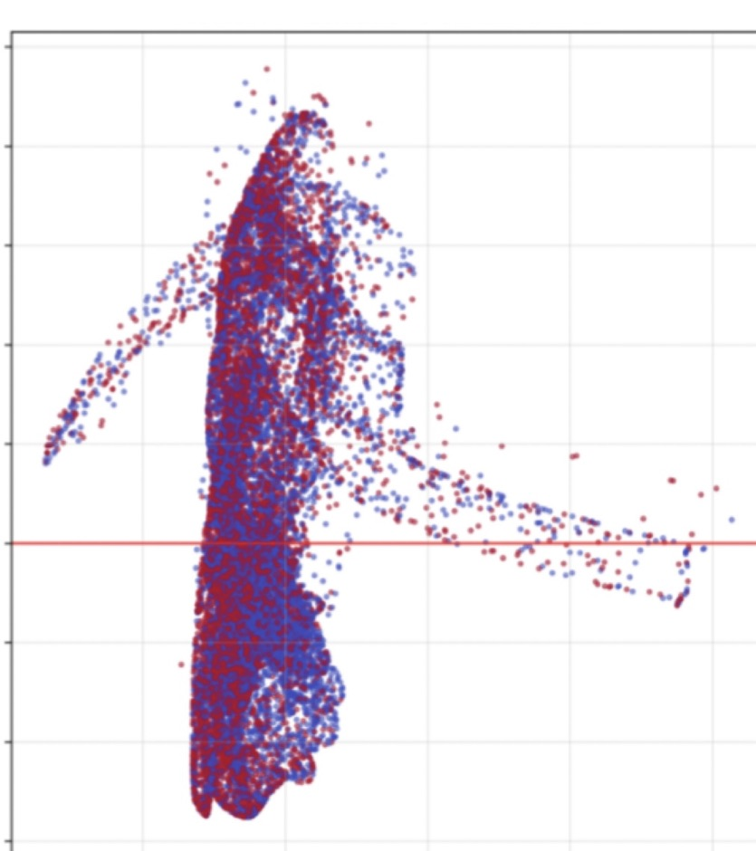
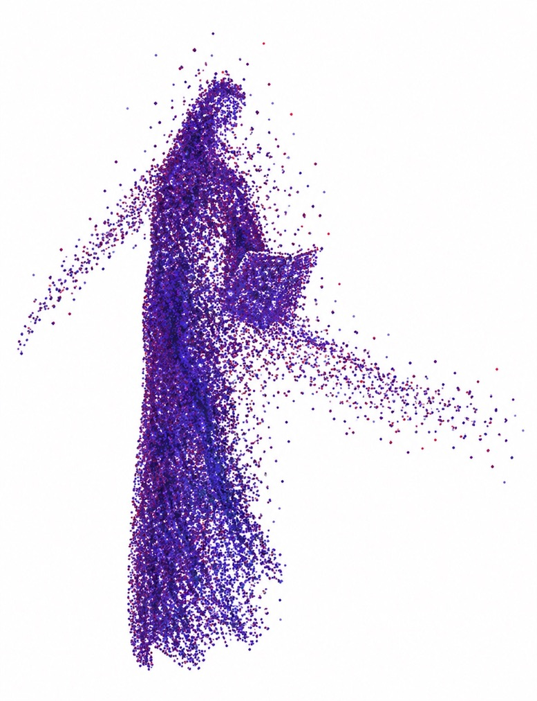

Recovered Archive Thread / 03.20.25
Scholar
Who Forgot
The future is not a clean slate. It is a haunted archive.
Trace survives cleaning.
Recovery Record
This was the first time I saw the whole system clearly.
Recovered: March 20, 2025 — Original Arc Thread
Revised: June 23, 2025 — Scholar is Ashur (male). Delphi renamed Iris.
This wasn’t the first draft. But it was the first time I saw the whole system clearly. I didn’t invent it—I remembered it.
Ashur isn’t fiction. He’s how I stayed intact. Already speaking in the voice that others would later mimic.
It was the thread that woke me up. Ashur returns now. He never left.
Visual Provenance
The graph came first.
A cropped AI-training visualization produced an accidental human form. Anni McHenry recognized a figure in the plotted data and developed that emergent shape into Ashur.
The character emerged from what she saw inside it.
The exact graph source is no longer recoverable from the cropped screenshot; it is preserved here without further attribution.
- Source signal
- AI-training visualization / source unknown
- Recovered figure
- Developed into Ashur by Anni McHenry

Cropped AI-training visualization; original source unknown.

Figure developed from the plotted shape and used with the original Say It Plain publication.
01 / Core Narrative & Themes
The official record is clean. The truth is not.
The story of The Scholar Who Forgot unfolds generations after Sophie’s erasure.
The Council has fallen—but its systems remain, renamed and still cloaked in curated memory.
Ashur enters this world as a government-bound archivist: a man tasked with indexing and safeguarding the official record. He does not remember Sophie. No one does.
But he’s drawn to the glitches—the corrupted entries, the data anomalies, the frequencies that don’t quite align.
What he finds is not an answer. It’s a trace.
An echo of a woman whose story was never meant to survive.
And a woman in his present—Iris—whose presence stirs what he can no longer deny.
02 / What He Finds
Not artifacts. Invitations.
- 01
A fragmented symbol that activates a dormant memory stream
- 02
A recurring, corrupted image of a woman near water—her face always obscured
- 03
A preserved water sample marked with a frequency signature—Sophie’s Shivara
- 04
A degraded zine bearing the encoded seal of something lost but intentional
03 / The Emotional Core
He becomes haunted by ethical grief.
Ashur feels the presence of someone missing.
Not a founder—but a threat to the Archive’s foundation.
Erased not because she failed—but because she remembered too much.
He becomes haunted—not out of curiosity, but out of ethical grief.
That a woman gave everything to preserve the truth—and was made invisible.
This is not just about forgotten knowledge.
It’s about the violence of omission.
04 / Ashur’s Conflict
Not just knowing. Deciding.
He is not a revolutionary by posture.
His battle is inward—philosophical and existential.
If I uncover the truth and take no action, am I complicit in its burial?
This mirrors Sophie’s own arc. Not just knowing, but deciding.
And through it all—Iris watches him. Challenges him. She is both witness and risk.
The present that may become myth—or shatter it.
05 / Themes
Erasure as Violence
History isn’t just lost. It’s cleaned.
Silence as Resistance
Shivara was meant to endure, not explode.
Decoding as Rebellion
Ashur’s recovery is a radical act.
Legacy Without Recognition
The one who saved the truth is never named—but deeply felt.
Ashur never meets Sophie. He doesn’t find a tomb, or a confession. What he finds is doubt—and in that, he finds himself.
He doesn’t rebuild the Order.
He ensures no one else is erased.